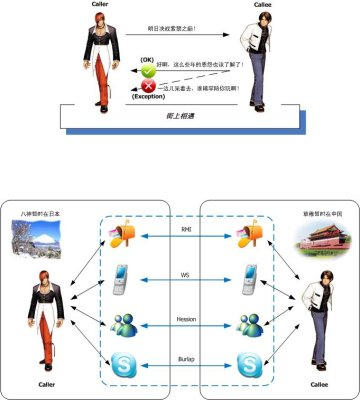

要严肃，还是要诙谐，这是个问题
2014年从msn space存档中重新恢复出来！
前阵子本来打算SprngMVC一章写完之后开始Spring Remoting的编写，为了能够让大家以亲近并且容易理解的方式来讲解Remoting，我是绞尽脑汁苦想了近乎两天，最后，起草了如下的这幅示意图：

当然这是第一版，初步搞定之后，我就发给a9看，a9比较赞同我这种表达方式，而且提出一些改进意见，等晚上碰到kruce ，问他什么感性，这小子一句“靠，太不严肃了”，呵呵，整的我有些无言以对的感觉，不知道大家在一本书中如果看到这样的一副示意图，会做何感想那？！
PS. 反正因为编排顺序，我要先写JavaEE服务的集成，Remoting的内容可以暂且放置一边，暂时不用考虑这个问题了，呵呵
Comments
闹闹 - 4/18/2008 10:13:06 AM
你太有才了．严不严肃不好讲，很９０后的感觉．哈哈．
Wang Darren - 4/18/2008 10:24:24 AM
怎么现在都喜欢几零后吗？！呵呵，那要算我也是70后啊～
凝 水 - 7/2/2008 4:21:16 PM
这图是用什么工具画的？
Wang Darren - 7/2/2008 8:31:45 PM
就不告诉你，就不告诉你，就不～告诉你～，哈哈 (MS Visio)